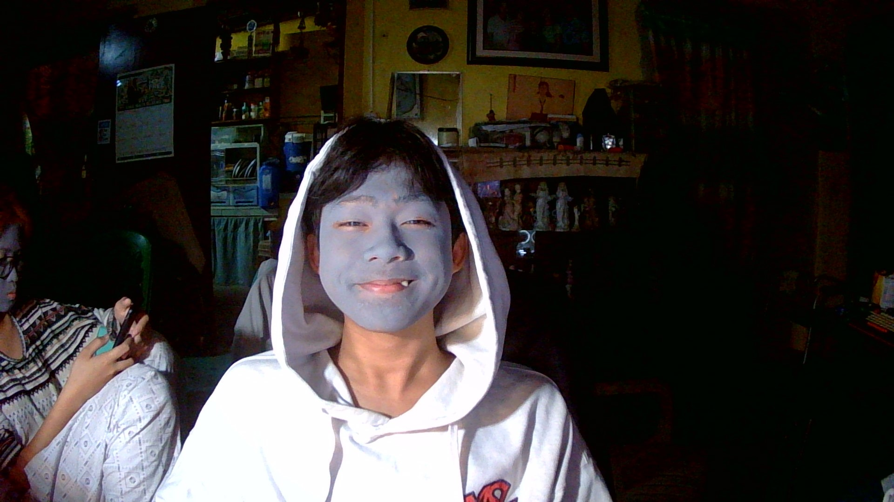

Senior High School
Academic AchieverCompleted Senior High School with academic excellence and developed my foundation in ICT.
I am a First Year ACT student passionate about web development, UI design, and building real-world systems. I enjoy creating clean, modern, and responsive websites that focus on user experience.
I also have experience in academic projects like systems development, and I continuously improve my skills in HTML, CSS, JavaScript, and PHP.

Completed Senior High School with academic excellence and developed my foundation in ICT.
Earned NC II certification which strengthened my technical and computer skills.
Currently studying Associate in Computer Technology, focusing on programming and system development.